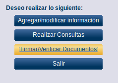
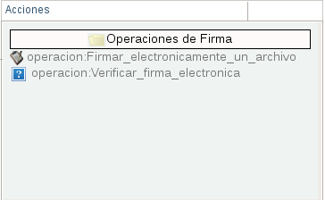

12.5.- Módulo Firmar/Verificar Documentos
Para acceder a este módulo se hace click en el botón Firmar/Verificar Documento (ver figura S3.3-1)

Figura S3.3-1. Selección del botón Firmar/Verificar Documento
Y se desplegara una ventana (ver figura S3.3-2) donde se procederá a realizar las operaciones
correspondiente a este módulo

Figura S3.3-2. Menú inteligente, Operaciones del módulo Firmar/Verificar Documentos
-
operacion:firmar_electronicamente_un_archivo: esta operación permite firmar digitalmente documentos.
-
operacion:verificar_firma_electronica: esta operación permite verificar las firmas de los documentos firmado digitalmente